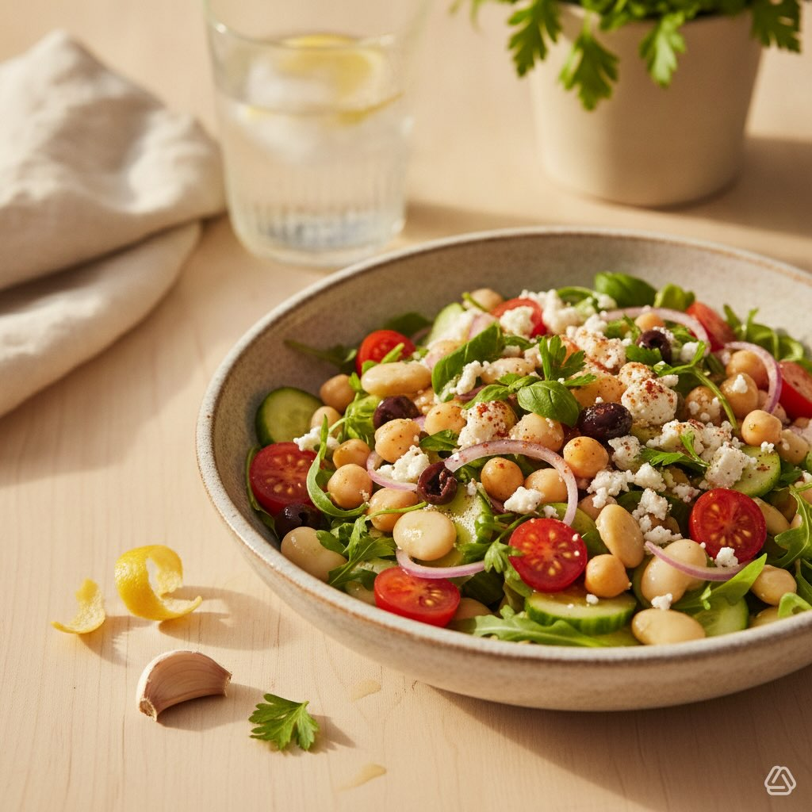

Insalata Estiva di Ceci e Fagioli Bianchi
Un'insalata mediterranea fresca e completa: ceci e fagioli bianchi con pomodorini, cetriolo, olive taggiasche e feta, condita con un'emulsione al limone. Pronta in 10-15 minuti.
Ingredienti (per 2 porzioni)
- 240 g ceci lessati (peso scolato)
- 200 g fagioli bianchi lessati (peso scolato)
- 10 pomodorini ciliegia, tagliati a metà
- 1 cetriolo medio, a dadini
- ½ cipolla rossa piccola, affettata sottile
- 40 g rucola o spinacino
- 10 olive taggiasche denocciolate, spezzettate
- 30 g feta sbriciolata (opzionale)
- Scorza e succo di 1 limone
- 2 cucchiai olio extravergine d'oliva (≈ 20 ml)
- 1 cucchiaino di miele o sciroppo d'agave (opzionale)
- Foglie di prezzemolo e basilico tritati q.b.
- Sale e pepe q.b.
- Paprika dolce o cumino in polvere, una spolverata (opzionale)
👨🍳 Preparazione (10-15 minuti)
- In una ciotola grande unisci i ceci e i fagioli scolati e sciacquati.
- Aggiungi i pomodorini, il cetriolo, la cipolla, le olive e la rucola.
- In una ciotolina emulsiona il succo di limone, la scorza, l'olio, il miele, sale, pepe e le erbe; aggiungi paprika o cumino se usi.
- Versa il condimento sull'insalata e mescola delicatamente. Aggiungi la feta sopra.
- Lascia riposare 5-10 minuti a temperatura ambiente (o in frigo se fa molto caldo) e servi.
Varianti e consigli
- Per una versione vegana, elimina la feta o sostituiscila con tofu marinato.
- Per un gusto più mediterraneo, aggiungi peperone rosso a dadini e capperi.
- Perfetta con pane integrale o come ripieno per una piadina.
- Si conserva 1-2 giorni in frigo; condisci poco prima di servire se vuoi il cetriolo croccante.
- Valori indicativi per porzione: ~520 kcal, ~22 g proteine, ~18 g grassi, ~68 g carboidrati.
Summer Chickpea and White Bean Salad
A fresh and complete Mediterranean salad: chickpeas and white beans with cherry tomatoes, cucumber, taggiasca olives and feta, dressed with a lemon emulsion. Ready in 10-15 minutes.
Ingredients (serves 2)
- 240 g boiled chickpeas (drained weight)
- 200 g boiled white beans (drained weight)
- 10 cherry tomatoes, halved
- 1 medium cucumber, diced
- ½ small red onion, thinly sliced
- 40 g rocket or baby spinach
- 10 pitted taggiasca olives, broken into pieces
- 30 g crumbled feta (optional)
- Zest and juice of 1 lemon
- 2 tablespoons extra virgin olive oil (≈ 20 ml)
- 1 teaspoon honey or agave syrup (optional)
- Chopped parsley and basil leaves to taste
- Salt and pepper to taste
- Dusting of sweet paprika or ground cumin (optional)
👨🍳 Preparation (10-15 minutes)
- In a large bowl combine the drained and rinsed chickpeas and beans.
- Add the cherry tomatoes, cucumber, onion, olives and rocket.
- In a small bowl emulsify the lemon juice, zest, oil, honey, salt, pepper and herbs; add paprika or cumin if using.
- Pour the dressing over the salad and toss gently. Top with the feta.
- Let rest 5-10 minutes at room temperature (or in the fridge if very hot) and serve.
Variations and tips
- For a vegan version, omit the feta or replace it with marinated tofu.
- For a more Mediterranean taste, add diced red pepper and capers.
- Perfect with wholemeal bread or as a filling for a piadina.
- Keeps 1-2 days in the fridge; dress just before serving if you want the cucumber crunchy.
- Approximate values per portion: ~520 kcal, ~22 g protein, ~18 g fat, ~68 g carbs.
Ensalada de Verano de Garbanzos y Alubias Blancas
Una ensalada mediterránea fresca y completa: garbanzos y alubias blancas con tomatitos, pepino, aceitunas taggiasca y feta, aliñada con una emulsión al limón. Lista en 10-15 minutos.
Ingredientes (para 2 porciones)
- 240 g garbanzos cocidos (peso escurrido)
- 200 g alubias blancas cocidas (peso escurrido)
- 10 tomatitos cherry, cortados por la mitad
- 1 pepino mediano, en daditos
- ½ cebolla morada pequeña, en rodajas finas
- 40 g rúcula o canónigos
- 10 aceitunas taggiasca deshuesadas, en trozos
- 30 g feta desmenuzado (opcional)
- Ralladura y zumo de 1 limón
- 2 cucharadas de aceite de oliva virgen extra (≈ 20 ml)
- 1 cucharadita de miel o sirope de agave (opcional)
- Hojas de perejil y albahaca picadas al gusto
- Sal y pimienta al gusto
- Una pizca de pimentón dulce o comino en polvo (opcional)
👨🍳 Preparación (10-15 minutos)
- En un bol grande une los garbanzos y las alubias escurridos y enjuagados.
- Añade los tomatitos, el pepino, la cebolla, las aceitunas y la rúcula.
- En un cuenco pequeño emulsiona el zumo de limón, la ralladura, el aceite, la miel, sal, pimienta y las hierbas; añade pimentón o comino si lo usas.
- Vierte el aliño sobre la ensalada y mezcla con suavidad. Añade el feta por encima.
- Deja reposar 5-10 minutos a temperatura ambiente (o en la nevera si hace mucho calor) y sirve.
Variantes y consejos
- Para una versión vegana, elimina el feta o sustitúyelo con tofu marinado.
- Para un gusto más mediterráneo, añade pimiento rojo en daditos y alcaparras.
- Perfecta con pan integral o como relleno de una piadina.
- Se conserva 1-2 días en nevera; aliña justo antes de servir si quieres el pepino crujiente.
- Valores aproximados por porción: ~520 kcal, ~22 g proteínas, ~18 g grasas, ~68 g carbohidratos.
Salada de Verão de Grão-de-Bico e Feijão Branco
Uma salada mediterrânica fresca e completa: grão-de-bico e feijão branco com tomatinhos, pepino, azeitonas taggiasca e feta, temperada com uma emulsão de limão. Pronta em 10-15 minutos.
Ingredientes (para 2 porções)
- 240 g grão-de-bico cozido (peso escorrido)
- 200 g feijão branco cozido (peso escorrido)
- 10 tomatinhos cherry, cortados ao meio
- 1 pepino médio, em cubos
- ½ cebola roxa pequena, fatiada fina
- 40 g rúcula ou espinafre bebé
- 10 azeitonas taggiasca sem caroço, em pedaços
- 30 g feta esfarelado (opcional)
- Raspa e sumo de 1 limão
- 2 colheres de sopa de azeite extra virgem (≈ 20 ml)
- 1 colher de chá de mel ou xarope de agave (opcional)
- Folhas de salsa e manjericão picadas q.b.
- Sal e pimenta q.b.
- Uma pitada de paprica doce ou cominhos em pó (opcional)
👨🍳 Preparação (10-15 minutos)
- Numa taça grande junta o grão-de-bico e o feijão escorridos e lavados.
- Adiciona os tomatinhos, o pepino, a cebola, as azeitonas e a rúcula.
- Numa tigela pequena emulsiona o sumo de limão, a raspa, o azeite, o mel, sal, pimenta e as ervas; adiciona paprica ou cominhos se usares.
- Deita o tempero sobre a salada e mistura delicadamente. Adiciona o feta por cima.
- Deixa repousar 5-10 minutos à temperatura ambiente (ou no frigorífico se estiver muito calor) e serve.
Variantes e dicas
- Para uma versão vegana, elimina o feta ou substitui por tofu marinado.
- Para um sabor mais mediterrânico, adiciona pimento vermelho em cubos e alcaparras.
- Perfeita com pão integral ou como recheio de uma piadina.
- Conserva-se 1-2 dias no frigorífico; tempera pouco antes de servir se quiseres o pepino crocante.
- Valores aproximados por porção: ~520 kcal, ~22 g proteínas, ~18 g gorduras, ~68 g hidratos.
Sommersalat mit Kichererbsen und weißen Bohnen
Ein frischer und vollständiger mediterraner Salat: Kichererbsen und weiße Bohnen mit Kirschtomaten, Gurke, Taggiasca-Oliven und Feta, mit einer Zitronenemulsion angemacht. In 10-15 Minuten fertig.
Zutaten (für 2 Portionen)
- 240 g gekochte Kichererbsen (Abtropfgewicht)
- 200 g gekochte weiße Bohnen (Abtropfgewicht)
- 10 Kirschtomaten, halbiert
- 1 mittelgroße Gurke, gewürfelt
- ½ kleine rote Zwiebel, dünn geschnitten
- 40 g Rucola oder Babyspinat
- 10 entsteinte Taggiasca-Oliven, in Stücke gebrochen
- 30 g zerbröselter Feta (optional)
- Schale und Saft von 1 Zitrone
- 2 Esslöffel natives Olivenöl extra (≈ 20 ml)
- 1 Teelöffel Honig oder Agavensirup (optional)
- Gehackte Petersilien- und Basilikumblätter nach Geschmack
- Salz und Pfeffer nach Geschmack
- Eine Prise süßer Paprika oder gemahlener Kreuzkümmel (optional)
👨🍳 Zubereitung (10-15 Minuten)
- In einer großen Schüssel die abgetropften und abgespülten Kichererbsen und Bohnen vermischen.
- Kirschtomaten, Gurke, Zwiebel, Oliven und Rucola zugeben.
- In einer kleinen Schüssel Zitronensaft, Schale, Öl, Honig, Salz, Pfeffer und Kräuter emulgieren; nach Bedarf Paprika oder Kreuzkümmel zugeben.
- Dressing über den Salat gießen und vorsichtig mischen. Den Feta darüber verteilen.
- 5-10 Minuten bei Zimmertemperatur ruhen lassen (oder im Kühlschrank bei großer Hitze) und servieren.
Varianten und Tipps
- Für eine vegane Version den Feta weglassen oder durch marinierten Tofu ersetzen.
- Für einen mediterraneren Geschmack gewürfelte rote Paprika und Kapern zugeben.
- Perfekt mit Vollkornbrot oder als Füllung für eine Piadina.
- Hält sich 1-2 Tage im Kühlschrank; erst kurz vor dem Servieren anmachen, wenn die Gurke knackig bleiben soll.
- Ungefähre Werte pro Portion: ~520 kcal, ~22 g Eiweiß, ~18 g Fett, ~68 g Kohlenhydrate.
Καλοκαιρινή Σαλάτα με Ρεβίθια και Λευκά Φασόλια
Μια φρέσκια και πλήρης μεσογειακή σαλάτα: ρεβίθια και λευκά φασόλια με ντοματίνια, αγγούρι, ελιές ταγιάσκα και φέτα, με dressing λεμονιού. Έτοιμη σε 10-15 λεπτά.
Συστατικά (για 2 μερίδες)
- 240 g βρασμένα ρεβίθια (καθαρό βάρος)
- 200 g βρασμένα λευκά φασόλια (καθαρό βάρος)
- 10 ντοματίνια, κομμένα στη μέση
- 1 μέτριο αγγούρι, σε κύβους
- ½ μικρό κόκκινο κρεμμύδι, σε λεπτές φέτες
- 40 g ρόκα ή μωρό σπανάκι
- 10 ελιές ταγιάσκα χωρίς κουκούτσι, σε κομμάτια
- 30 g τριμμένη φέτα (προαιρετικά)
- Φλούδα και χυμός από 1 λεμόνι
- 2 κουταλιές σούπας εξαιρετικό παρθένο ελαιόλαδο (≈ 20 ml)
- 1 κουταλάκι γλυκού μέλι ή σιρόπι αγαύης (προαιρετικά)
- Ψιλοκομμένος μαϊντανός και βασιλικός κατά βούληση
- Αλάτι και πιπέρι κατά βούληση
- Μια πρέζα γλυκιά πάπρικα ή κύμινο σε σκόνη (προαιρετικά)
👨🍳 Εκτέλεση (10-15 λεπτά)
- Σε ένα μεγάλο μπολ αναμείξτε τα σουρωμένα και ξεπλυμένα ρεβίθια και φασόλια.
- Προσθέστε τα ντοματίνια, το αγγούρι, το κρεμμύδι, τις ελιές και τη ρόκα.
- Σε ένα μικρό μπολ ενσωματώστε το χυμό λεμονιού, τη φλούδα, το λάδι, το μέλι, αλάτι, πιπέρι και τα μυρωδικά· προσθέστε πάπρικα ή κύμινο αν θέλετε.
- Περιχύστε τη σαλάτα με το dressing και ανακατέψτε απαλά. Προσθέστε τη φέτα απ' πάνω.
- Αφήστε να ξεκουραστεί 5-10 λεπτά σε θερμοκρασία δωματίου (ή στο ψυγείο αν κάνει πολλή ζέστη) και σερβίρετε.
Παραλλαγές και συμβουλές
- Για vegan εκδοχή, αφαιρέστε τη φέτα ή αντικαταστήστε τη με μαριναρισμένο τόφου.
- Για πιο μεσογειακή γεύση, προσθέστε κόκκινη πιπεριά σε κύβους και κάππαρη.
- Τέλεια με ολικής άλεσης ψωμί ή ως γέμισμα για πιαντίνα.
- Διατηρείται 1-2 ημέρες στο ψυγείο· αλείψτε λίγο πριν σερβίρετε αν θέλετε το αγγούρι τραγανό.
- Ενδεικτικές τιμές ανά μερίδα: ~520 kcal, ~22 g πρωτεΐνες, ~18 g λιπαρά, ~68 g υδατάνθρακες.